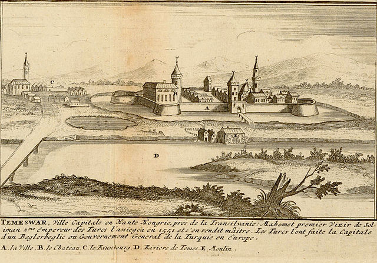
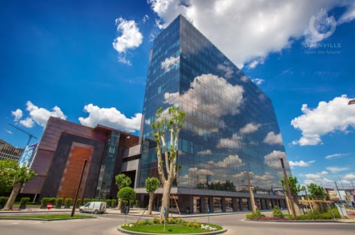

Timișoara is the capital city of Timiș County, the third largest city in Romania and the main social, economic and cultural centre in western Romania.Nicknamed the Little Vienna or the City of Flowers, Timișoara is considered the informal capital city of the historical Banat. The country's third most populous city is the economic hub of the region, with 319,279 inhabitants as of the 2011 census. It is home to almost a half-million inhabitants in the metropolitan area, as well as ca. 50,000 students from over 50 countries.
- History
- The first identifiable civilization in Banat region were the Dacians who left traces of their past. Nearby archaeological finds indicate settlements of Neolithic and Roman origins. From coin finds, it is known that the area was inhabited during Roman Dacia.

- Middle Ages
- Timișoara was first officially mentioned as a place in 1212 as the Roman castrum Temesiensis or Castrum regium Themes. The town was destroyed by the Tatars in the 13th century but Timișoara was rebuilt and grew considerably during the reign of Charles I of Hungary, who, upon his visit there in 1307, ordered the fortress to be fortified with stone walls and to build a royal palace. Italian craftsmen and architects were used. He even moved the royal seat from Buda to Temesvár between 1315 and 1323.
- 16th-19th centuries
- In 1552, a 16,000-strong Ottoman army led by Kara Ahmed Pasha conquered the city and transformed it into a capital city in the region (Temeşvar Eyalet). The local military commander, István Losonczy, and other Christians were massacred on 27 July 1552 while escaping the city through the Azapilor Gate.
Timișoara has been an important economic centre since the 18th century when the Habsburg administration was installed. Due to Austrian colonisation, ethnic and religious diversity and innovative laws, the economy began to develop. The technicians and craftsmen that settled in the city established guilds and helped develop the city's economy. In 1717, Timișoara became host to the first beer factory in Banat.During the Industrial Revolution, numerous modern innovations were introduced. The Bega river was also channelled during this time. It was the first city with horse-drawn trams (1869) and the first navigable canal on current Romanian territory.[16] This way, Timișoara had contact with Europe, and even with the rest of the world through the Black Sea, leading to the local development of commercialism.[31][32][33] In the 19th century, the railway system of the Hungarian Kingdom reached Timișoara. It was the first city in the Habsburg Monarchy with street lighting, and the first city in Europe and second in the world after New York illuminated by electric light.
- 20th century
- After the war, the People's Republic of Romania was proclaimed, and Timișoara underwent Sovietization and later, Systematization. The city's population tripled between 1948 and 1992. Timișoara became highly industrialised both through new investments and by increasing the capacities of the old enterprises in various industries: machine building, textile and footwear, electrical, food, plastics, optical, building materials, furniture. In December 1989, Timișoara witnessed a series of mass street protests in what was to become the Romanian Anti-Communist Revolution. On 20 December, three days after bloodshed began there, Timișoara was declared the first city free of Communism in Romania
Economy

Apart from domestic local investment, there has been significant foreign investment from the European Union, particularly from Germany and Italy. Continental AG has produced tires since opening a plant in 1998. In the years that followed, Continental also established an automotive software engineering division in Timișoara. All in all, as of 2015 Continental AG employed about 8000 people in Timișoara, and the company keeps expanding. The Linde Group produces technical gases, and a part of the wiring moulds for BMW and Audi vehicles are produced by the company Dräxlmaier Group. Wiring for Volkswagen and other vehicles are produced at the German company Kromberg & Schubert. Also, Swiss company FM Logistic, already present in Timiș County for Alcatel-Lucent, Nestlé, P&G, Smithfield and in Bucharest for Cora, L'Oréal, Sanofi Aventis and Yves Rocher, and for companies like PROFI Rom Foods, BIC, Kraft Foods or SCA Packaging—offering them domestic transport services and international transport services for Bricostore, Arctic, Danone, Unilever or Contitech, the growth of FM Logistic in Romania and in Dudești through its first warehouse in Romania. Nestlé produces waffles here. The USA company Flextronics maintains a workplace in the west of the city for the production of mobile telephony and government inspection department devices. The American company Procter & Gamble manufactures washing and cleaning agents in Timișoara. Smithfield Foods—the world's largest pork processor and hog producer—has two subsidiaries in Timișoara and Timiș County: Smithfield Ferme and Smithfield Prod.